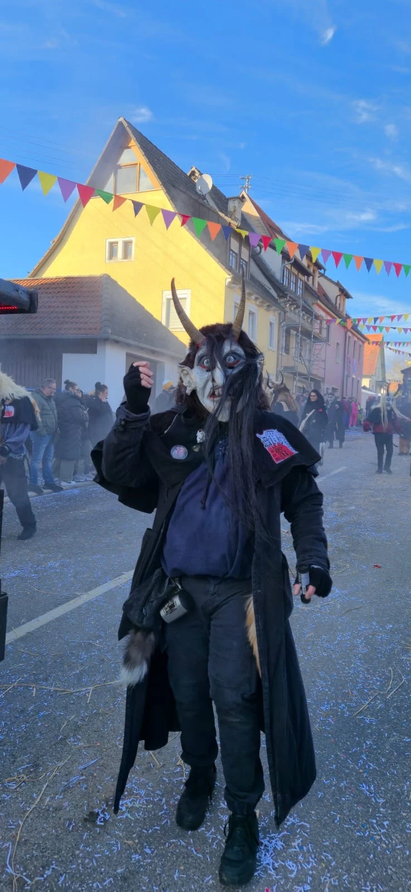

Kalkweil
Dämonen
Tradition. Gemeinschaft.
Leidenschaft für die Fasnet.
Aktuelle Termine
Krampuslauf Mieming
Festausflug nach Österreich
Weitere öffentliche Fasnetstermine folgen nach Freigabe.
Gemeinsam für die Fasnet
Wir sind die Kalkweil Dämonen aus Rottenburg am Neckar. Seit 2015 verbindet uns die Leidenschaft für die Fasnet, das gemeinsame Erleben von Tradition und die Freude am Vereinsleben.
Unser Kalkweilertor ist Teil unseres Vereinslogos und verbindet unseren Auftritt mit unserer Heimatstadt.
Lerne uns kennen →

Unser Häs
Eine markante Dämonenmaske mit Hörnern, dunkle Kleidung und unser Vereinsabzeichen prägen den Auftritt der Kalkweil Dämonen.
Mehr über die Geschichte und die Besonderheiten unseres Häs folgt hier.
Momente unserer Fasnet
Teil unserer Gemeinschaft werden
Du interessierst dich für unseren Verein oder möchtest mehr über uns erfahren?
Kontaktmöglichkeiten und Informationen zur Mitgliedschaft folgen.